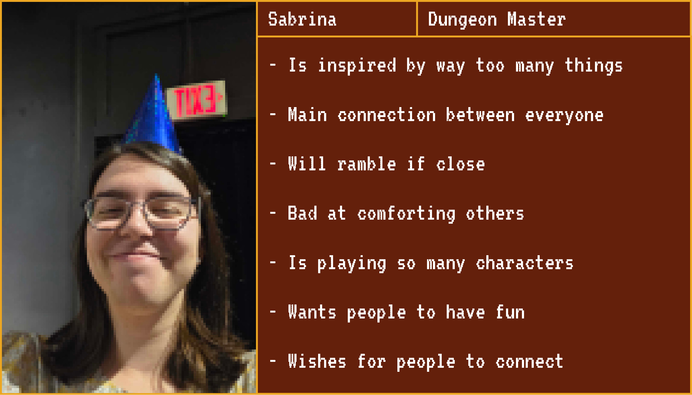
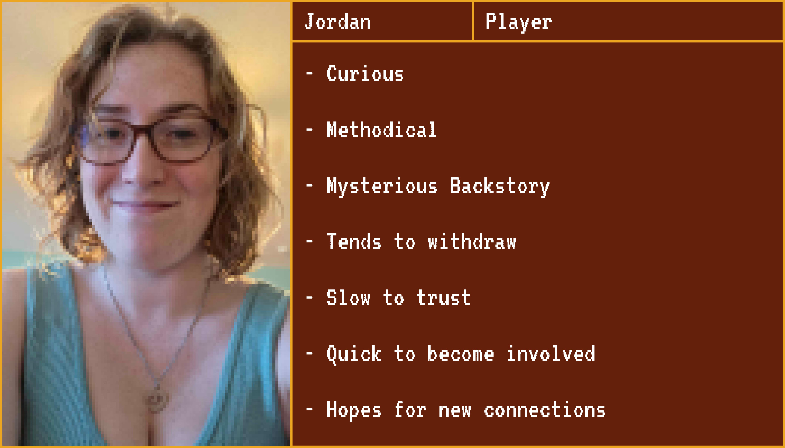
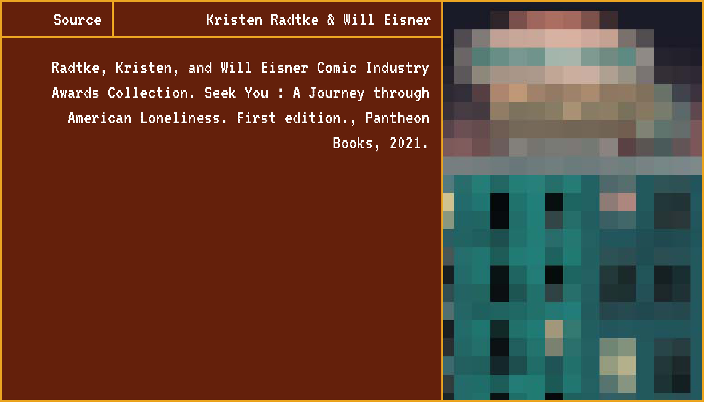
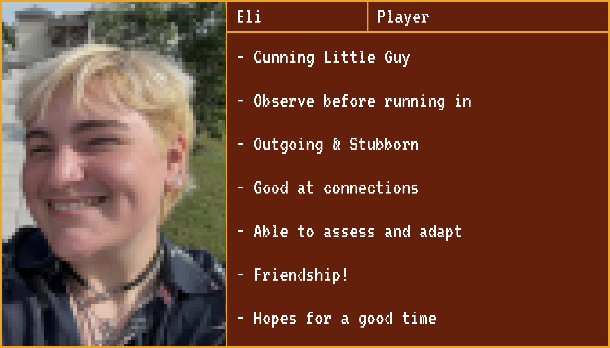
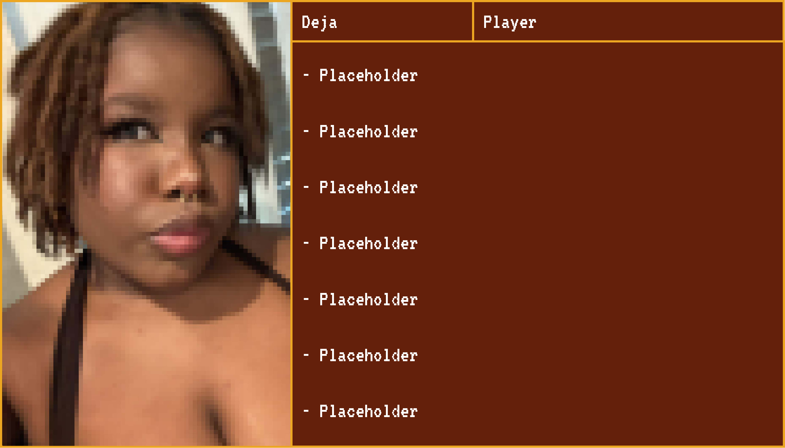
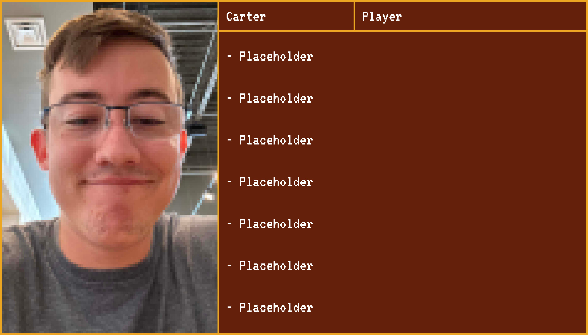

Here's a not-so-fun-fact, loneliness has increased by quite a bit in the US, as well as-bleheheheh- oh my goodness I can't speak today.. probably all over the world, ever since the pandemic!

Oh!

The anxiety of interacting with others added with the shame society has forced upon us for feeling lonely has created a difficult dichotomy to navigate.
We're getting philosophical
It happens a lot more than you think it would
“Loneliness implies a flaw in us like no other longing or sadness does. “I'm lonely” translates to “I'm unlovable” or “Nobody likes me.”... But loneliness isn't necessarily tied to whether you have a partner or a best friend or an aspirationally active social life in which you're laughing all the time. It's a variance that rests in the space between the relationships you have and the relationships you want. Loneliness lives in the gap.”

To add onto this, our society is built so that the- the more successful the economy is, the more likely people are to live alone. While this may seem like a positive thing, people who live alone are more likely to die young.
Oh really?

Why?

Well, when you live alone, you could get hurt or something, and no one would be there to potentially help you.. Also! They're more likely to get in their head mentally due to lack of connections.
huh

Do you know why?
Well, loneliness starts when people are young, and sadly our society has sort of, hmm, uhh how do I say this? Oh! Yeah, our society builds itself on outcasting people for being “different.”
“A hallmark of loneliness is shame: since childhood, there are few things more humiliating than being left out.”
the art kid experience
so true
so true
so true
so uh-
we're not-
We've adopted ya'll.
Do not resist
Ok
Alright
Anyways, the good thing about being outcasted is that they form their own positive community and connections!
The internet can also help to form communities!
Exactly! As weird as certain parts of the internet can be, and we all know it can be weird, the ability to form positive connections from anywhere has made it so that you can connect with so many more people than originally thought!
Yippee!!!
Yippee!!!
Yippee!!